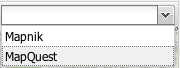

La carte publique
La carte publique est composée de 3 parties :
- un arbre de sélection des couches ;
- la carte ;
- un formulaire d'ajout d'enregistrement.
L'action de cliquer sur le bouton "Soumettre une observation" ouvre une infobulle d'information qui invite à positionner le curseur sur la marque à l'endroit de l'observation et le panneau formulaire :
On peut modifier le fond cartographique en ouvrant le sélecteur de fond de carte :

Il suffit alors de remplir le formulaire pour valider et envoyer l'enregistrement.